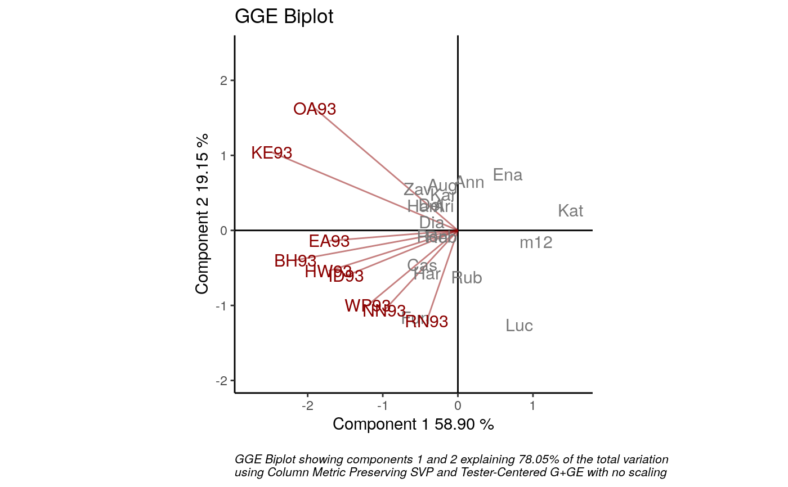
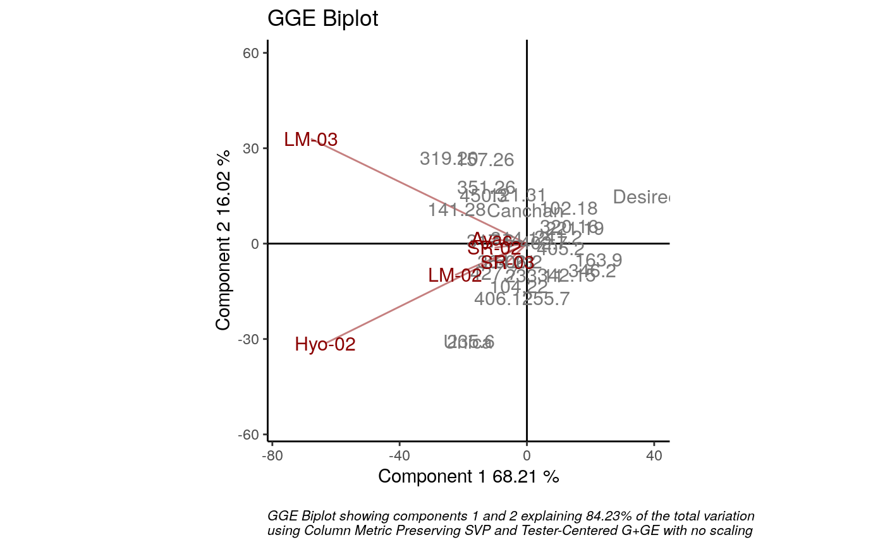

GGE biplots are used for visual examination of the relationships
between test environments, genotypes, and genotype-by-environment
interactions. `GGEPlot()` produces a biplot as an object of class 'ggplot',
using the output of the GGEmodel function.
Several types of biplots are offered which focus on different aspects of the
analysis. Customization options are also included. This function is a
modification of GGEPlot from the
hrefhttps://CRAN.R-project.org/package=GGEBiplotsGGEBiplots package.
GGEPlot(
GGEModel,
type = "Biplot",
d1 = 1,
d2 = 2,
selectedE = NA,
selectedG = NA,
selectedG1 = NA,
selectedG2 = NA,
colGen = "gray47",
colEnv = "darkred",
colSegment = "gray30",
colHull = "gray30",
sizeGen = 4,
sizeEnv = 4,
largeSize = 4.5,
axis_expand = 1.2,
axislabels = TRUE,
axes = TRUE,
limits = TRUE,
titles = TRUE,
footnote = TRUE
)An object of class GGEModel.
type of biplot to produce.
"Biplot": Basic biplot.
"Selected Environmen"t: Ranking of cultivars based on
their performance in any given environment.
"Selected Genotype": Ranking of environments based on the
performance of any given cultivar.
"Relationship Among Environments".
"Comparison of Genotype".
"Which Won Where/What": Identifying the 'best'
cultivar in each environment.
"Discrimination vs. representativeness": Evaluating the
environments based on both discriminating ability and representativeness.
"Ranking Environments": Ranking environments with respect to
the ideal environment.
"Mean vs. stability": Evaluating cultivars based on both average
yield and stability.
"Ranking Genotypes": Ranking genotypes with respect to the
ideal genotype.
PCA component to plot on x axis. Defaults to 1.
PCA component to plot on y axis. Defaults to 2.
name of the environment to evaluate when `type="Selected Environment"`.
name of the genotype to evaluate when `type="Selected Genotype"`.
name of the genotype to compare to `selectedG2` when `type="Comparison of Genotype"`.
name of the genotype to compare to `selectedG1` when `type="Comparison of Genotype"`.
genotype attributes colour. Defaults to `"gray47"`.
environment attributes colour. Defaults to `"darkred"`.
segment or circle lines colour. Defaults to `"gray30"`.
hull colour when `type="Which Won Where/What"`. Defaults to "gray30".
genotype labels text size. Defaults to 4.
environment labels text size. Defaults to 4.
larger labels text size to use for two selected genotypes in `type="Comparison of Genotype"`, and for the outermost genotypes in `type="Which Won Where/What"`. Defaults to 4.5.
multiplication factor to expand the axis limits by to enable fitting of labels. Defaults to 1.2.
logical, if this argument is `TRUE` labels for axes are included. Defaults to `TRUE`.
logical, if this argument is `TRUE` x and y axes going through the origin are drawn. Defaults to `TRUE`.
logical, if this argument is `TRUE` the axes are re-scaled. Defaults to `TRUE`.
logical, if this argument is `TRUE` a plot title is included. Defaults to `TRUE`.
logical, if this argument is `TRUE` a footnote is included. Defaults to `TRUE`.
A biplot of class ggplot
Yan W, Kang M (2003). GGE Biplot Analysis: A Graphical Tool for Breeders, Geneticists, and Agronomists. CRC Press.
Sam Dumble (2017). GGEBiplots: GGE Biplots with 'ggplot2'. R package version 0.1.1. https://CRAN.R-project.org/package=GGEBiplots
library(geneticae)
# Data without replication
library(agridat)
data(yan.winterwheat)
GGE1 <- GGEmodel(yan.winterwheat, centering = "tester")
GGEPlot(GGE1)

# Data with replication
data(plrv)
GGE2 <- GGEmodel(plrv, genotype = "Genotype", environment = "Locality",
response = "Yield", rep = "Rep", centering = "tester")
GGEPlot(GGE2)
